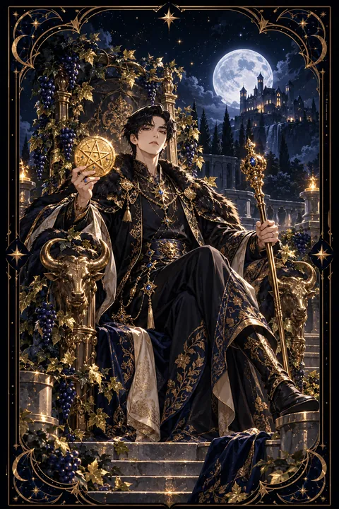

이 게시물은 쿠팡 파트너스 활동의 일환으로, 이에 따른 일정액의 수수료를 제공받습니다.


펜타클 왕 카드 — 든든히 쌓아 올린 풍요
펜타클 왕 카드 한눈에 보기
펜타클 왕 카드 상징 읽기

동네보살의 카드 그림은 전통 라이더–웨이트 덱의 뜻을 새 그림으로 옮긴 것입니다. 아래 상징 설명은 전통 덱의 그림을 기준으로 합니다.
펜타클 왕에는 포도 넝쿨이 가득 수놓인 옷을 입은 왕이 황소 머리가 조각된 옥좌에 앉아 있는 모습이 그려져 있습니다. 옷과 옥좌를 뒤덮은 포도 넝쿨은 오랜 노력으로 무르익은 풍요와 결실을 상징합니다.
옥좌에 새겨진 황소는 흙의 별자리인 황소자리를 뜻하며 끈기와 꾸준함, 흔들리지 않는 안정을 나타냅니다. 왕이 한 손에 든 동전은 이룬 재물을, 다른 손의 홀은 그것을 다스리고 책임지는 힘을 보여 줍니다.
왕의 뒤편에 우뚝 선 성은 긴 세월 쌓아 올린 기반과 안전한 터전을 의미합니다. 한 번에 세운 것이 아니라 돌 하나하나를 올려 완성한 결과라는 점에서 성실함의 결실이기도 합니다.
왕은 느긋하고 여유로운 자세로 앉아 있습니다. 이미 충분히 이루었기에 서두를 필요가 없는 사람의 모습이며 물질의 세계를 능숙하게 다스리는 성숙한 리더의 상징입니다.
펜타클 왕 카드 정방향 뜻
정방향 펜타클 왕은 오랜 노력 끝에 이룬 안정과 풍요를 뜻합니다. 일과 살림 모두에서 흔들림 없는 기반을 갖추고 주변을 책임지는 든든한 위치에 오르는 흐름입니다.
이 카드는 현실적인 판단력과 꾸준함이 결실을 맺은 상태를 보여 줍니다. 경험에서 나온 지혜로 일을 안정적으로 이끌고 사람들에게 믿음을 주는 리더십이 빛납니다. 맡은 일에서 성과를 인정받거나 살림이 넉넉해지는 소식이 있을 수 있습니다.
지금은 쌓아 온 것을 바탕으로 한 해의 큰 그림을 그려 보기 좋은 때입니다. 수입과 지출, 저축의 흐름을 정리하고 오래 지켜 갈 원칙을 세워 보세요. 가진 것을 곁의 사람들과 조금씩 나누면 신뢰가 두터워지고 풍요도 더 단단해집니다. 넉넉할 때 비상금을 채워 두는 지혜가 풍요를 오래 지켜 줍니다. 이 카드는 그런 성숙한 풍요의 모습입니다.
펜타클 왕 카드 역방향 뜻
역방향 펜타클 왕은 풍요를 다루는 손길이 한쪽으로 치우친 모습을 담고 있습니다. 가진 것을 잃을까 지나치게 움켜쥐며 인색해지거나 돈과 조건으로 사람을 판단하게 될 수 있습니다.
자신의 방식만 옳다고 고집하다 주변 사람과 부딪히는 때이기도 합니다. 반대로 씀씀이를 조절하지 못해 살림이 흔들리거나 겉으로 보이는 성공에 매달려 속이 불안해지는 경우도 있습니다.
그렇다고 애써 쌓은 성이 허물어진다는 경고는 아닙니다. 수입과 지출을 한 장에 정리해 현재 상황을 정확히 파악해 보세요. 결정을 내리기 전에 믿을 만한 사람의 의견을 한 번 더 듣는 것도 좋습니다. 움켜쥔 손을 조금 풀어 고마운 사람에게 마음을 전하면 흔들리던 기반이 다시 안정을 찾습니다. 너그러움을 되찾는 순간 판단도 다시 맑아집니다.
연애에서 펜타클 왕 카드
솔로라면 안정감 있고 믿음직한 모습이 좋은 인연을 부르는 때입니다. 순간의 불꽃보다 현실적으로 함께할 수 있는 사람에게 마음이 가기 쉽습니다. 자신의 생활이 단단한 만큼 비슷하게 성숙한 사람과 가까워질 수 있습니다.
곁을 지키는 짝이 있다면 두 사람이 서로에게 든든한 버팀목이 되어 주는 관계가 이어집니다. 말보다 행동으로 책임감을 보여 주는 모습이 상대에게 큰 신뢰를 줍니다. 다만 경제적인 조건이나 자신의 방식만 앞세우면 상대가 답답함을 느낄 수 있으니 결정은 함께 내리는 것이 좋습니다. 함께 살림의 미래를 계획하거나 좋은 곳에서 여유로운 시간을 보내 보세요. 넉넉한 마음으로 상대를 품고 기다려 주는 태도가 왕의 사랑법입니다. 상대의 작은 성취에도 넉넉한 칭찬을 건네 보세요.
재회·속마음 질문에서 펜타클 왕 카드
재회 질문에서 펜타클 왕이 나오면 안정된 모습과 책임감이 관계를 되살리는 바탕이 된다는 뜻입니다. 상대는 당신이 얼마나 믿을 만한 사람인지 현실적으로 가늠하는 중일 수 있습니다. 감정적인 호소보다 달라진 생활과 꾸준한 태도를 보여 주는 편이 설득력이 있습니다. 다만 예전에 고집이나 통제가 문제였다면 그 부분을 먼저 내려놓아야 합니다. 서두르지 말고 차분하게 신뢰를 쌓으며 상대가 편안하게 다가올 수 있는 여지를 남겨 두세요. 관계를 다시 시작한다면 약속의 무게를 가볍게 여기지 않는 모습을 먼저 보여 주세요. 그것이 왕이 지닌 가장 큰 설득력입니다.
일·금전에서 펜타클 왕 카드
일과 직장에서는 책임 있는 자리에서 능력을 발휘하는 시기입니다. 쌓아 온 경험과 신용 덕분에 중요한 일을 맡거나 팀을 이끄는 역할을 하게 될 수 있습니다. 안정적으로 일을 운영하고 결과를 내는 능력이 인정받습니다. 결정을 내릴 때 아랫사람의 의견을 함께 들으면 판이 더 단단해집니다.
금전 면에서는 오래 모아 온 살림이 든든한 기반이 되어 주는 때입니다. 한 해 단위로 수입과 지출, 저축 계획을 세우고 비상금을 넉넉히 마련해 두세요. 겉으로 보이는 소비보다 오래 지켜 갈 수 있는 알뜰한 원칙이 이 풍요를 지키는 힘이 됩니다. 큰 지출은 한 달쯤 묵혀 두고 다시 판단하는 습관이 살림을 지켜 줍니다. 쌓아 온 것을 다음 사람에게 가르쳐 주는 일이 자산을 더 단단하게 만듭니다.
펜타클 왕 카드는 예일까 아니오일까
오랜 노력 끝에 흔들림 없는 풍요를 이룬 왕의 카드여서 예라고 답합니다. 일과 살림에 관한 물음에 든든한 답이 됩니다. 역방향이라면 욕심과 고집을 내려놓는다는 조건이 붙습니다.
자주 묻는 질문
펜타클 왕 카드 역방향은 나쁜 뜻인가요?
역방향 펜타클 왕은 풍요를 다루는 손길이 한쪽으로 치우친 모습을 담고 있습니다. 가진 것을 잃을까 지나치게 움켜쥐며 인색해지거나 돈과 조건으로 사람을 판단하게 될 수 있습니다.
펜타클 왕 카드가 연애 질문에 나오면요?
솔로라면 안정감 있고 믿음직한 모습이 좋은 인연을 부르는 때입니다. 순간의 불꽃보다 현실적으로 함께할 수 있는 사람에게 마음이 가기 쉽습니다. 자신의 생활이 단단한 만큼 비슷하게 성숙한 사람과 가까워질 수 있습니다.
타로 카드는 어떻게 뽑나요?
타로 카드 페이지에서 78장을 섞으면 그중 22장이 펼쳐집니다. 마음이 가는 세 장을 고르면 과거·현재·미래 자리에 놓이고, 한 장씩 뒤집어 자리와 방향에 맞는 풀이를 읽습니다. 정방향과 역방향은 섞는 순간 정해집니다.